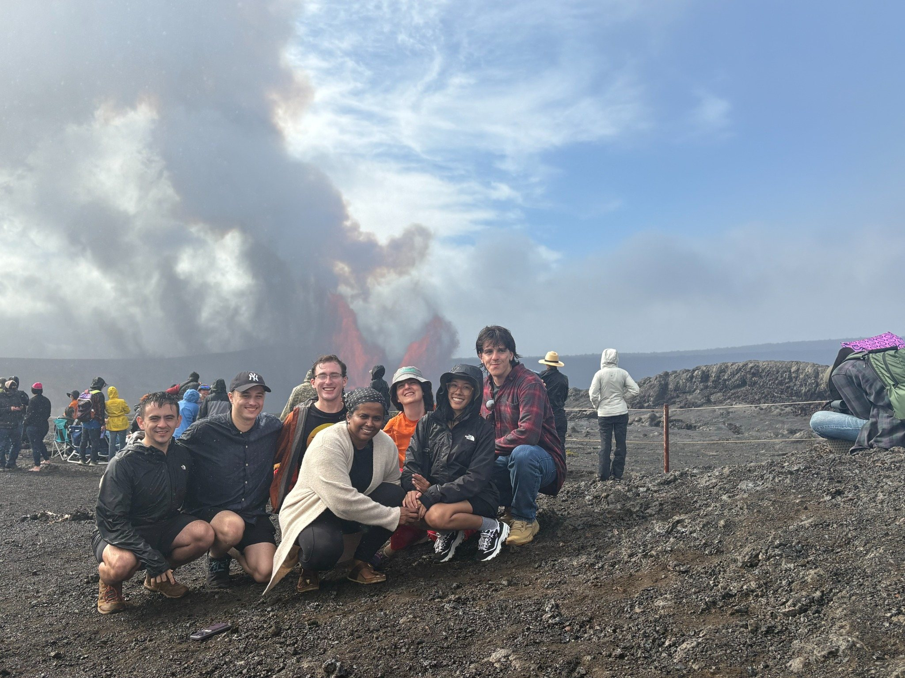

Research is a community practice
My mentoring emphasizes early research engagement, collaborative problem solving, clear communication, and opportunities for students to build networks beyond their home institution.
I have advised PhD students, master’s students, undergraduate projects, and statistical consulting projects. I also help organize research communities and workshops that give students structured entry points into new research areas.
Current and recent students
PhD students
Udani Ranasinghe — ideals of phylogenetic networks.
Ikenna Nometa — algebraic statistics, phylogenetics, and Wasserstein distance optimization.
Maize Curiel — algebraic and combinatorial applications in systems and evolutionary biology.
Master’s and undergraduate mentoring
Projects have included pseudo-monomial ideals for microbiome data, algebraic properties of the coalescent model, graphical models, trait evolution, neural ideals, phylogenetic network reconstruction, and ecological/social applications.